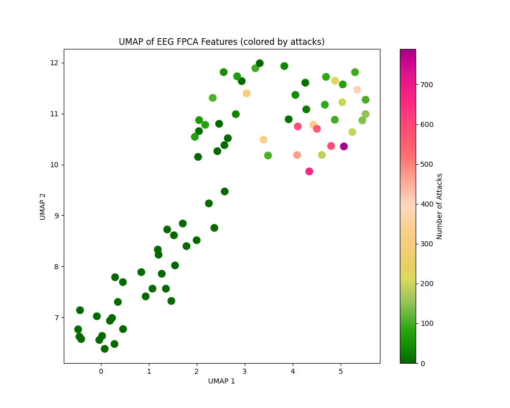
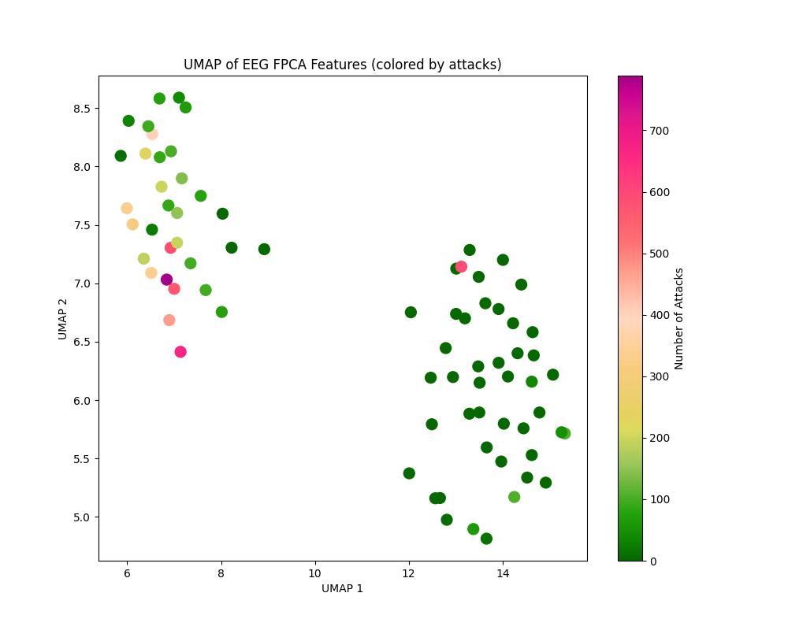
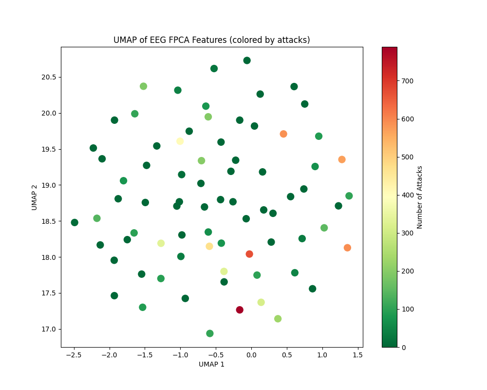
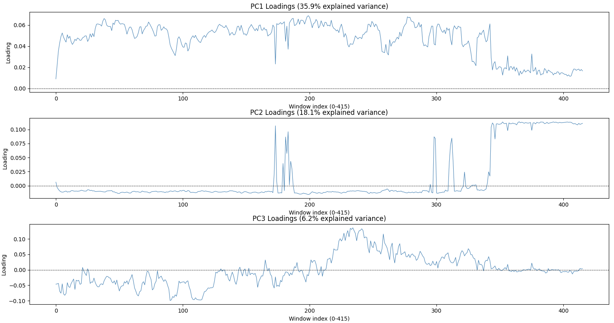
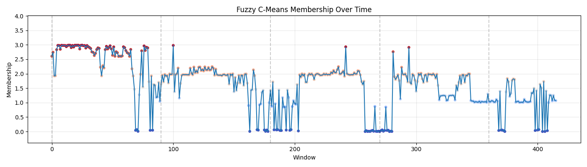
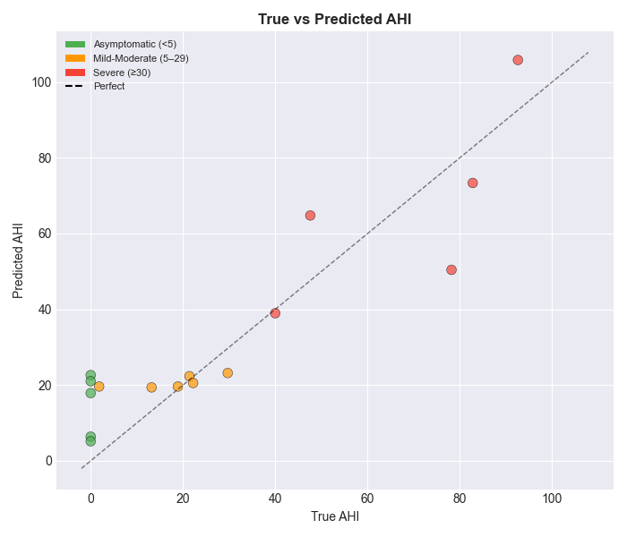

EEG polysomnography: predicting sleep apnoea with transformers
An overnight recording is a strange training example. It contains millions of EEG measurements, but the label we want is a single number for the whole night: the apnoea-hypopnoea index, or AHI. We tried to bridge that gap with increasingly flexible models, starting with linear classifiers and ending with attention over time. The useful lesson was less about finding one winning architecture than about discovering what each representation throws away.
The polysomnographic dataset has 40 patients and up to two nights each. We excluded two nights with severe signal artifacts, leaving 78 recordings. Six EEG channels are sampled at 200 Hz, with roughly eight hours per night. The table also contains patient and night information such as age, body measurements, pulse, blood pressure, and oxygen desaturation index (ODI). AHI counts apnoea and hypopnoea events per hour in the dataset's recording-level formulation. Our question was whether the EEG sequence, together with those patient variables, could predict that night-level outcome.
Start with the unit of prediction
One person can contribute two nights. If those nights fall on opposite sides of a train/test split, a model can recognize a person rather than generalize to a new one. Patient-grouped evaluation is therefore the right standard for a claim about unseen people. Every transformation that learns from data, including scaling, PCA, and functional PCA, must also be fitted inside the training fold. Some exploratory neural scripts in the repository use a random split of nights; their plots should not be read as patient-independent test results.
We considered both a continuous AHI prediction and three severity groups: below 5, 5 to under 30, and 30 or above. Regression retains the difference between, say, 6 and 25. Classification optimizes the category directly. Neither formulation can create window-level event labels from a single whole-night AHI. This is weak supervision: the model sees where a night's windows came from, but it is never told which minute contained an event.
Before predicting, ask what the embedding sees
The signal pipeline filters line noise at 50 Hz, applies a 1–50 Hz band-pass, and explores ICA for artifact removal. We then divide a night into roughly 60-second windows. A compact spectral representation integrates power in delta, theta, alpha, beta, and gamma bands for each of six channels. That gives 30 numbers per window instead of about 12,000 samples per channel. Wavelet summaries and functional PCA offer different compromises between detail and dimension.



These maps are exploratory projections, not accuracy measurements. In the presentation, raw power and wavelet features looked more promising for severity separation than raw-signal FPCA. The practical question is whether compression has retained the kind of variation we care about. A visually crisp island in two dimensions is still not a held-out prediction.
PCA loadings offer another view. Along approximately 400 time windows, the first components appear to emphasize an early deep-sleep period, a late waking period, and a transition around the middle of the night. Their signs are arbitrary, and these interpretations are hypotheses about the curves, not sleep-stage labels.


The fuzzy-clustering trajectory was especially intriguing. Its repeated shifts resemble the rhythm we expect in a night of sleep, including periods compatible with REM cycling. But a cluster ID has no physiological name until it is checked against scored sleep stages. It is an invitation to investigate, not a discovered REM detector.
The simple models earn their place
We first concatenate the EEG features with patient variables. L1-regularized logistic regression gives a sparse and inspectable classification baseline. Two binary thresholds, AHI ≥ 5 and AHI ≥ 30, make an ordinal variant. PCA before logistic regression attacks the severe correlation among neighboring windows and channels. Random forests relax the linear decision boundary; gradient boosting predicts continuous AHI and then bins it into severity.
The recurring result is more informative than any one score: healthy nights are easiest, while the middle group is often confused with its neighbors. In the repository's summary, the direct logistic model has one-versus-rest AUCs of 0.95, 0.67, and 0.75 across the three groups; the random forest reports 0.99, 0.86, and 0.89. Those figures come from the project's reported experiments, not a new run here, and a small cohort makes fold composition matter a great deal. Gradient-boosted AHI estimates often underestimate the high end and can turn moderate cases into severe ones after thresholding.
One more caution is easy to miss: ODI is itself a night-level measure of oxygen desaturation and can be very close to the outcome. Including it answers a different question from predicting AHI from EEG alone. The fusion model may be useful, but its apparent success cannot automatically be credited to EEG. Apnoea and hypopnoea counts, their indices, and AHI itself must never enter the predictors when AHI is the target.
From a bag of features to a sequence
A flattened night gives a conventional model every window as a separate column. It can learn that a particular position matters, but it has no built-in way to share the same pattern detector across the night or compare distant windows. This motivated two neural ideas in the repository: a learned attention pool that scores each window, and a fuller self-attention block that lets windows exchange information before pooling. They solve different problems.
In the transformer prototype, each 30-feature power vector is projected to a hidden state. Four-head self-attention compares every window with every other window, then residual connections, layer normalization, and a feed-forward block refine those states. A mean over time yields one EEG vector for the night. A separate MLP embeds seven patient variables. The two vectors are concatenated and passed through a shared backbone, followed by a binary classification head and an AHI regression head.
# Condensed from the repository's TransformerAttention.forward
h = self.embed(eeg_windows) # [batch, windows, hidden]
a, weights = self.attention(h, h, h) # windows attend to windows
h = self.ln1(h + a)
h = self.ln2(h + self.ff(h))
night = h.mean(dim=1)
patient = self.patient_embed(patient_features)
shared = self.shared(torch.cat([night, patient], dim=1))
apnoea_probability = torch.sigmoid(self.classification_head(shared))
ahi_estimate = self.regression_head(shared)The shared part matters. Classification can push the representation toward the presence of disease, while regression asks it to retain differences in severity. In the binary prototype, the loss combines binary cross-entropy with an AHI mean-squared error applied to symptomatic examples. A later three-class attention-pooling experiment uses class-weighted cross-entropy and an AHI loss for the two non-healthy groups. These are concrete design choices, not evidence that joint training always improves either task.
Self-attention produces a window-by-window relationship matrix. The simpler pooling model instead assigns one scalar score to each window and forms a weighted sum. The distinction matters when interpreting saliency: a high pooling weight says a window contributed strongly to that learned summary, but it is not a verified apnoea event marker. The prototype also has no explicit positional encoding or padding mask in its shown forward pass. Its window order and any padded windows need careful treatment before interpreting attention as a map of sleep physiology.

That final distinction is the honest end of the story. The code contains a useful transformer architecture with a shared multimodal backbone, but the visible training path in joint_model.py comments out TransformerAttention and instantiates SimpleAttention; joint_multinomial.py also trains SimpleAttention. The regression image can illustrate the neural experiment, but it cannot establish a patient-held-out transformer result on its own. With only 78 usable nights and 40 people, a more flexible model can memorize an attractive curve. The next convincing experiment would train the transformer and the pooling baseline under identical patient-grouped splits, with all fitted preprocessing confined to each training fold, and compare both against an ODI-aware tabular baseline.
The progression from logistic regression to attention was worthwhile because it sharpened the question. Power features made the signal manageable; classical models exposed the hard middle cases; the shared backbone offered a way to learn from both the night's sequence and the patient table. The remaining challenge is to show that the extra temporal machinery generalizes to people it has never seen.